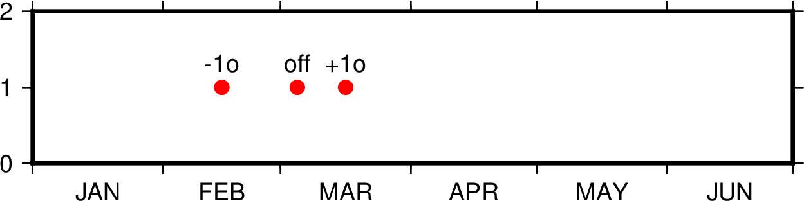

TIME参数¶
本节列出所有时间相关参数，参数的默认值在中括号内列出。
- TIME_EPOCH
指定所有相对时间的参考时刻 [1970-01-01T00:00:00]
其格式为
yyyy-mm-ddT[hh:mm:ss]或yyyy-Www-ddTT[hh:mm:ss]- TIME_UNIT
指定相对时间数据相对于参考时间的单位 [s]
可以取：
- y：年；假定一年365.2425天；
- o：月；假定所有月是等长的；
- d：天；
- h：时；
- m：分钟；
- s：秒；
- TIME_SYSTEM
TIME_EPOCH和TIME_UNIT的合并版即指定
TIME_SYSTEM相当于同时指定了TIME_EPOCH和TIME_UNIT。可取如下值：JD：等效于-4713-11-25T12:00:00 dMJD：等效于1858-11-17T00:00:00 dJ2000：等效于2000-01-01T12:00:00 dS1985：等效于1985-01-01T00:00:00 sUNIX： 等效于1970-01-01T00:00:00 sRD0001：等效于0001-01-01T00:00:00 sRATA：等效于0000-12-31T00:00:00 d
该参数并不存在于
gmt.conf中，当指定该参数时，其会被自动转换为TIME_EPOCH和TIME_UNIT对应的值。- TIME_WEEK_START
- 指定周几是一周的第一天，可取值为Monday或Sunday [Monday]
- TIME_Y2K_OFFSET_YEAR
当用两位数字表示四位数字的年份时，TIME_Y2K_OFFSET_YEAR给定了100年序列的第一年 [1950]
比如，若TIME_Y2K_OFFSET_YEAR=1729，则数字29到99分别表示1729到1799，而数字00 到28则表示1800到1828。默认值为1950，即00到99表示的年份范围为1950到2049。
- TIME_REPORT
控制GMT运行进度报告中是否显示时间戳 [
none]可以取三个值：
none不显示时间戳clock显示绝对时间elapsed显示自会话开始所经历的时间
- TIME_IS_INTERVAL
控制输入的日期时间数据截断和微调 [
off]其可以取如下三类值：
off：即不对输入数据做任何截断和调整+<n><u>：<n>为某个整数，<u>为某个时间单位。其表示将输入的日期时间数据截断为<n><u>的整数倍，并将其放在紧接着的时间间隔的中间-<n><u>：同样，但将该输入数据放在前一个时间间隔的中间
时间间隔单位
<u>可以取如下值：y年o月u周h小时m分钟s秒
下面的示例在时间坐标系下绘制了三个红点，每个红点的输入数据都是:
1997-03-05 1
图中展示了
TIME_IS_INTERVAL取不同值时的效果：off：1997-03-05解释为1997-03-05T00:00:00.00.0+1o：1997-03-05解释为1997-03-15T12:00:00.0-1o：1997-03-05解释为1997-02-15T12:00:00.0
- TIME_INTERVAL_FRACTION
确定时间轴开头和结尾的部分时间间隔是否需要标注 [0.5]
对于时间轴而言，若开头/结尾部分的时间间隔大于指定的时间间隔的某个比例，则绘制开头/结尾部分的标注并将标注置于时间间隔的中间。